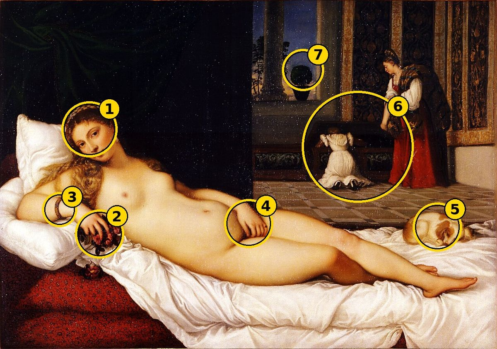

Hidden in the Frame · Uffizi Gallery, Florence
Venus of Urbino
Titian · 1538 · Oil on canvas · Room 83

The story
The painting was commissioned by Guidobaldo della Rovere, the future Duke of Urbino. In a letter he simply called it “the naked woman” – and pressed to get it at last. It was probably a painting about marriage, for a young husband. The pose comes from Giorgione's “Sleeping Venus”, which Titian himself helped finish. But with one decisive difference: this Venus is not asleep. She is awake – and she is looking at you.
Details to look for
- Her gaze goes straight to the viewer, calm, confident, without any shame. Giorgione's Venus slept in a landscape, out of reach. This one lies in a real bedroom and looks at you as if you had just walked in. The viewer becomes the husband.
- In her hand she holds roses, the flower of Venus and of love. One has already fallen onto the sheet – a small hint that beauty and youth fade.
- Bracelet and pearl earring: she is no goddess from Olympus but a wealthy young woman of flesh and blood. The jewellery shows rank – and suits a bride.
- The dark edge of the curtain falls vertically exactly onto her hand. Left: dark, intimate, only her and you. Right: bright, the orderly household. Titian splits the picture into two worlds – desire and everyday life – and her hand lies exactly on the border.
- At her feet a little dog is sleeping, a classic symbol of fidelity. It sleeps – there is nothing to guard here. When Manet copied the pose 300 years later for his “Olympia”, he replaced the dog with a hissing black cat. Scandal.
- In the back two maids rummage in a chest. Such chests were part of a bride's dowry. They are fetching her clothes: soon she will get dressed, and the moment will be over.
- In the window stands a potted myrtle – the plant of Venus and a symbol of marital constancy. Love here is not wild like nature, but tamed, in a pot, inside the house.
What it says
Eroticism and morality in one picture: love, fidelity and fertility in marriage. Mark Twain called it the most obscene picture in the world – yet it is really a tribute to faithfulness.
Open the full guide – zoom, audio guide, German & Japanese →